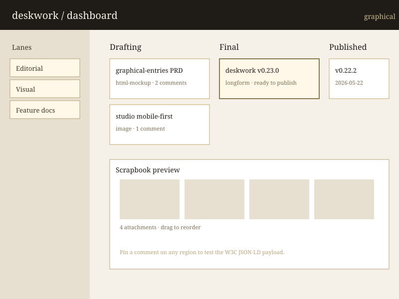

Click-and-drag to pin a rectangle. Switch tools above to test polygon drawing. Press Escape to cancel a draw in progress.
Phase 1 Task 1.2 — pin a region on the fixture image, observe the W3C Web Annotation JSON-LD payload, download it.

Click-and-drag to pin a rectangle. Switch tools above to test polygon drawing. Press Escape to cancel a draw in progress.